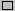
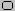

Per disegnare un rettangolo o un quadrato
- Nella cassetta degli strumenti, fare clic su  Per creare una forma a base quadrata o fare clic su  per creare una forma a corruzione tonda.
- Per disegnare un rettangolo, trascina il puntatore in diagonale nella direzione che desideri.
- Per disegnare un quadrato, tieni premuto SPOSTARE mentre trascini il puntatore.
Note
- Lo sfondo predefinito e i colori in primo piano appaiono a sinistra nella scatola dei colori.Puoi disegnare con il colore in primo piano facendo clic o puoi disegnare con il colore di sfondo facendo clic con il tasto destro.
- È possibile creare un riempimento colorato facendo clic su uno stile di riempimento nella parte inferiore della cassetta degli attrezzi.
- La larghezza del bordo della scatola è la stessa dello spessore selezionato per gli strumenti di linea.Per modificare lo spessore del bordo, fare clic sulla linea o lo strumento curva nella cassetta degli attrezzi, quindi fai clic sullo spessore che desideri nella casella sotto la casella degli strumenti.